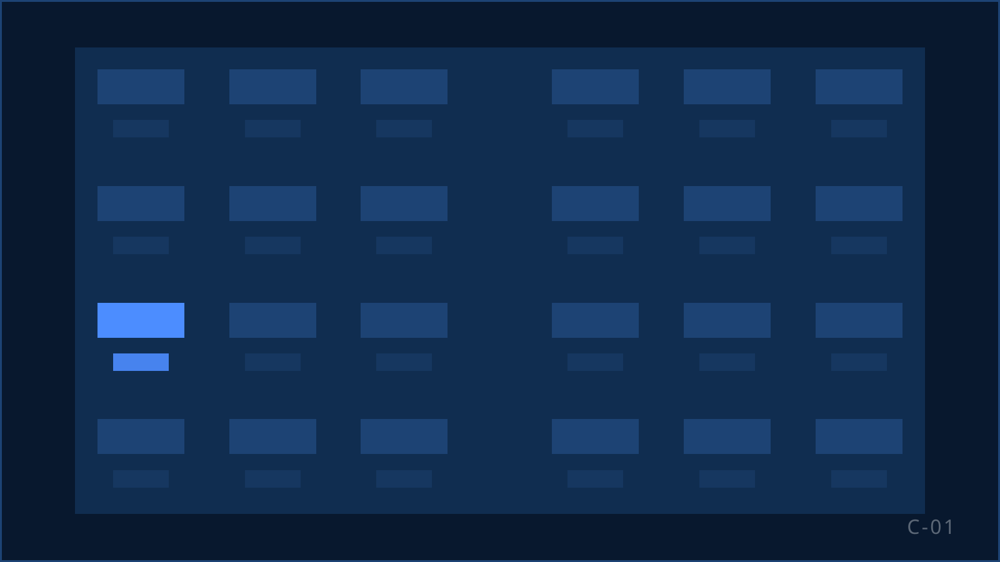
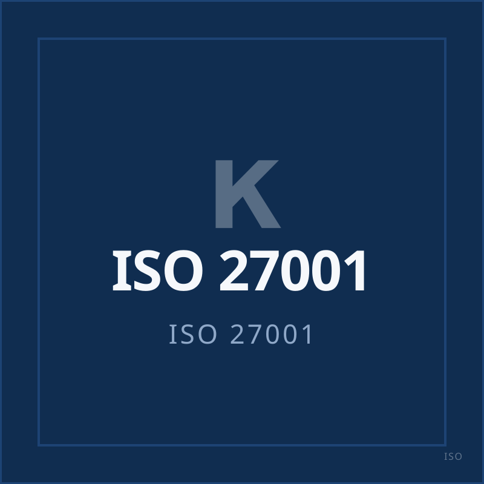

B2C-sales die resultaat oplevert.
KISS bouwt en stuurt telefonische salesteams voor uitgevers, loterijen, goede doelen en abonnementsmerken. Geen beluren, maar commerciële capaciteit: recruitment, training, sales, supervisie en compliance onder één dak in Rijswijk. ISO 27001-gecertificeerd.

Geen beluren. Commerciële capaciteit.
Wie bij KISS een salesteam afneemt, koopt geen uren op een belvloer. U koopt een operatie: mensen die wij zelf werven en vijf dagen trainen, een supervisor op 10 tot 15 agents, kwaliteitscontrole per gesprek, bruikbare rapportage en een organisatie die het team kan uitbreiden zonder dat u er een afdeling bij krijgt.
| Criterium | Traditioneel callcenter (vaak) | KISS |
|---|---|---|
| Wat u koopt | Uren of seats | Een dedicated salesteam met eigen supervisor |
| Wie werft | Uitzendbureau of flexpool | Eigen recruitment in Rijswijk |
| Wie traint | Korte productinstructie, meestal op de vloer | Vijf dagen training vóór het eerste gesprek, daarna coaching door de supervisor |
| Wie stuurt | Eén teamleider op een grote groep | Eén supervisor op 10 tot 15 agents, met gespreksanalyse |
| Wat u terugkrijgt | Een overzicht met aantallen | Rapportage uit eigen IT & development, met de conclusies die wij eraan verbinden |
| Informatiebeveiliging | Een afspraak in het contract | ISO 27001-gecertificeerd, jaarlijks extern getoetst |
Vijf disciplines. Eén team.
B2C-sales uitbesteden
Een dedicated team dat werft, behoudt en uitbreidt, gestuurd op het resultaat dat u met ons afspreekt.
Outbound sales
Nieuwe abonnees, deelnemers en donateurs werven met een compliant opening en een getraind team.
Leadopvolging
Opt-in-leads uit uw campagnes snel nabellen, met de toestemming per lead vastgelegd.
Retentie & klantbehoud
Opzeggers behouden en oud-klanten terugwinnen zonder de relatie te beschadigen.
Cross-sell & upsell
Upgrades en uitbreidingen bij bestaande klanten, alleen als het aanbod past.
Sectoren waarin telefonische sales blijft werken
Sinds 1 juli 2026 mogen bedrijven bestaande en ex-klanten alleen nog bellen met voorafgaande, aantoonbare toestemming. De uitzondering blijft bestaan voor drie categorieën (bron: DDMA, 01-05-2025). Het zijn de sectoren waarin KISS werkt.
Sector
Media & uitgevers
Uitgevers van dag-, nieuws- en weekbladen en tijdschriften (periodieken, minimaal drie edities per jaar). Abonnees werven, upgraden en behouden.
Sector
Loterijen
Loterijen met maatschappelijk doel, uitsluitend vergunninghouders op grond van art. 3 lid 1 Wet op de kansspelen. Deelnemers werven en behouden.
Sector
Goede doelen
Ideële en charitatieve instellingen. Donateurs werven, upgraden, reactiveren.
Alle sectoren · Ook actief voor abonnements- en membershipmerken
Van briefing tot draaiende operatie
Briefing en bestandscheck
Propositie, doelgroep, toestemmingsbasis en KPI's op tafel. Verwerkersovereenkomst getekend.
Recruitment en selectie
Wij werven het team zelf, in Rijswijk.
Training
Vijf dagen vóór het eerste gesprek: product, script, wetgeving, gesprekstechniek.
Pilot met supervisie
Het team gaat live onder een eigen supervisor. Gesprekken worden beluisterd en het script wordt gekalibreerd.
Sturen op data
Rapportage uit eigen ontwikkeling, besproken met u, verwerkt in het volgende gesprek.
Opschalen
Teams groeien in blokken van 10 tot 15 agents, elk met een eigen supervisor.
Opschalen zonder controle te verliezen.
- supervisor op 10 tot 15 agents
- 1
- dagen training vóór het eerste gesprek
- 5
- werkplekken op onze eigen vloer
- 75
- commercieel getrainde agents
- 100+
Recruitment en training in eigen huis
Wie zelf werft en opleidt, hoeft niet op een uitzendbureau te wachten als de campagne groeit. Instroom is bij KISS een vast proces.
Supervisie en gespreksanalyse op de vloer
Een supervisor zit bij zijn team, luistert gesprekken terug en coacht dezelfde dag. Kwaliteit wordt tijdens het werk gestuurd, niet achteraf gemeten.
Data als input voor het volgende gesprek
Onze eigen IT & development bouwt de rapportages, zodat we zien welk script, welke agent en welk bestand het verschil maken.
Hoe wij dat borgen: Kwaliteit & compliance
ISO 27001-gecertificeerd. Sinds 2022.
U geeft ons klantbestanden, systeemtoegang en commerciële informatie. Daarom is onze informatiebeveiliging een gecertificeerd managementsysteem dat jaarlijks extern wordt getoetst: toegangsbeheer per medewerker, een vast incidentproces met melding aan u, en altijd een verwerkersovereenkomst.
Compliant bellen hoort daarbij. Wij bellen uitsluitend op basis van aantoonbare toestemming of een geldige klantrelatie zoals bedoeld in art. 11.7 Telecommunicatiewet, en wij werken volgens de Code Telemarketing van de Stichting Reclame Code.

Zo ziet het eruit in de praktijk
-
Geanonimiseerd
Landelijke loterij
- Uitdaging
- Deelnemers werven op volume zonder dat de kwaliteit per gesprek zakt.
- Aanpak
- Een dedicated team in blokken van 10 tot 15, met de sectorregels in het script.
Lees de case
-
Geanonimiseerd
Grote uitgever
- Uitdaging
- Abonnees werven, upgraden en behouden vanaf één vloer.
- Aanpak
- Eén team voor werving én behoud, met schriftelijke bevestiging als vaste stap.
Lees de case
-
Geanonimiseerd
Goed doel
- Uitdaging
- Donateurs werven en upgraden met respect voor de relatie.
- Aanpak
- Training op de Code Telemarketing en de 3-jaarstermijn, gespreksanalyse per agent.
Lees de case
Wie de vloer aanstuurt

Thomas van der GraafDirectie 
Patrick HessBackoffice & Finance 
Sabrina DilloeHoofd supervisie 
Angelo KollauTraining & Supervisie 
Toni ŠkuljIT & Development 
Samira de KruyffSupervisor 
Roshan NidhansingSupervisor 
Rashad de BruijneSupervisor
Niet iedere campagne past bij KISS. En KISS past niet bij iedere campagne.
Wat wél past: een herkenbaar merk, structureel volume en de ruimte om kwaliteit en resultaat naast elkaar te laten bestaan.
Bespreek uw salesvraag.
Vertel ons welk volume, welke doelgroep en welk resultaat u zoekt. Wij vertellen u eerlijk of en hoe KISS dat kan organiseren.